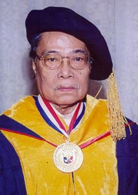

Good day, It's Group 6
Assigned section: Corpuz
Introducing:

Dr. Onofre Dizon Corpuz
Dr. Onofre Dizon Corpuz (December 1, 1926 - March 23, 2013) was a Filipino academic, economist, and historian. He served as the Secretary of Education of the Philippines from 1968 to 1971 and was the 13th president of the University of the Philippines System from 1975 to 1979. Dr. Corpuz was later named Minister of Education under the parliamentary system wherein he was also member of the now defunct Batasang Pambansa (National Assembly) from 1979 to 1983.